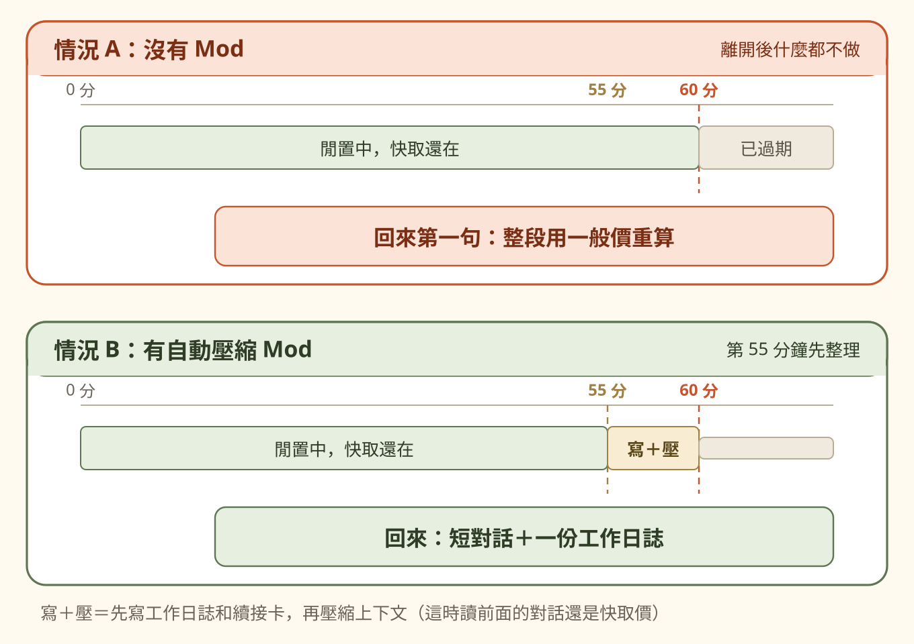
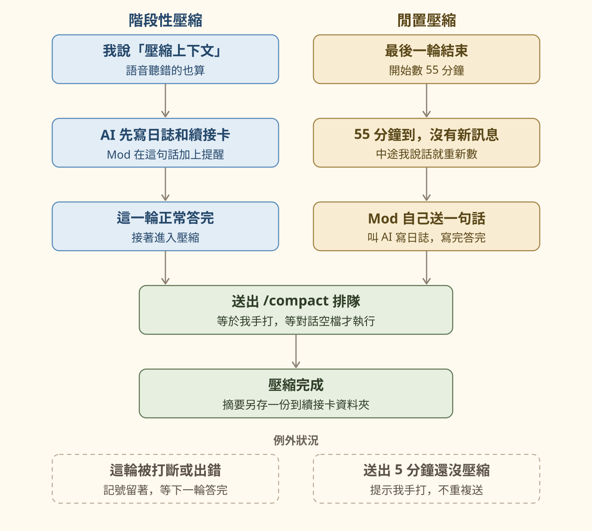

這篇在講什麼
我常常任務跑到一半就離開，離開超過一小時回來講第一句話，那一輪比平常貴，原因是快取過期了。我想要的是：快取消失前，自動把工作日誌寫好存檔，再壓縮上下文，回來時就是一個新的段落。第一版用 Hook 做不到，後來改用 Claude Code Mod 做出來。這篇講為什麼、怎麼做、踩過什麼坑，最後附不寫程式也能用的手動做法。
- 常常一個 AI 對話開很久、中途離開又回來的人
- 用 Claude Code 工作，想知道 Mod 能拿來做什麼的人
- 對話一長就怕 AI 忘記前面做到哪的人
- 離開超過一小時回來，為什麼第一句話特別貴
- 為什麼要先寫工作日誌再壓縮，順序不能換
- Hook 和 Mod 差在哪，以及一個不寫程式也能照做的手動壓縮流程
離開超過一小時回來，第一句話為什麼特別貴
AI 每回答一次，都要把前面整段對話重新讀一次。對話越長，每一輪要讀的就越多。
快取（prompt caching，提示詞快取）的作用，是把已經讀過的那一段先存起來。下一輪再讀到同一段，就用很便宜的價格計算，Claude 讀快取的價格大約是原價的十分之一。
快取有時效。Claude Code 用的快取存 1 小時，而且每用一次就重新計時。任務在跑的時候，快取一直被續命。

我那時候的想法很直接：
- 用 AI 解決一件事，花的錢值不值得？：快取、上下文長度怎麼算錢，那篇有完整的算法和我自己的數字。
快取過期前，先寫好工作日誌再壓縮上下文
解法有兩個步驟，順序不能換。
- 先寫工作日誌：把這段做到哪、卡在哪、下一步，寫成檔案存起來。
- 再壓縮上下文：讓 AI 把前面整段對話濃縮成一份摘要，之後的對話只帶著摘要往下走。
檔案放在哪、為什麼這樣決定，這些細節可能在濃縮時被省略掉。
可以同步到其他電腦，或交給另一家 AI 接續，讀得到做到哪、卡在哪、下一步。
我還另外寫一張「續接卡」，比工作日誌更短，只放四件事：目標、做到哪、卡在哪、下一步。回來時先讀這張卡再接著做。卡片寫得夠不夠清楚，決定接不接得上。
時機也要對：要趕在快取過期前做。快取還在的話，壓縮時 AI 讀前面的對話還是用快取價。
第一版自動整理用 Hook 做，叫不醒閒置的對話
10 月 3 日我先用 Claude Code 的 Hook 做第一版。
Hook 是「某件事發生時，自動跑一段檢查」。例如 AI 回答完要停下來時、我送出一句話時，都可以掛一段程式去檢查或補充提醒。
所以第一版改成「停下來的當下就寫」：
- AI 這一輪做了事、跑超過 10 分鐘，停下來前先寫一張續接卡
- 我閒置超過 60 分鐘回到舊對話，畫面提示我開新對話，貼續接卡的第一句接著做
這樣可以用，但還不是我原本想要的「離開時自動整理好」。
Claude Code Mod 是什麼，為什麼它能在閒置時叫醒對話
Claude Code Mod 是 Claude Code 外掛裡的一段程式（JavaScript 或 TypeScript），2026 年 10 月初推出，需要 Claude Code 2.1.287 以上的版本。
跟 Hook 一樣，它可以在送出訊息、AI 回答完這些時間點插手。我這次用到、Hook 做不到的是這兩件事：
| 能力 | 用在哪裡 |
|---|---|
| 自己設計時器 | 最後一輪結束後開始數 55 分鐘 |
| 自己送一句話給 AI | 時間到了，主動叫 AI 寫工作日誌 |
另外它能記住狀態（例如「這個對話等一下要壓縮」）、在畫面下方的狀態列顯示提示、跑 /compact 指令。想自己寫一個，可以從官方的 Claude Code Mods 建立教學開始。
- 用 AI 整理個案紀錄，個資會直接送出去嗎？：介紹的個資防護盾也是一個 Claude Code Mod。
我的自動壓縮 Mod 做兩件事：說一聲就壓縮、閒置 55 分鐘自動壓縮
10 月 6 日我把它做成 Mod，叫 auto-compact-55。
我要的是算時間，不看上下文用了幾 %。我當時說的是：「不要算%數，算時間」。快取會過期，是因為離開太久，所以照離開多久來算。
時間一開始設 50 分鐘，我覺得比較安全；10 月 6 日實際跑過之後，我改成 55 分鐘。

幾個細節：
- 語音輸入會聽錯：我用講的，「上下文」常被聽成「上下紋」「上下輪」「上校文」。這些都算數。我說「清上下文」也是指壓縮，不是清空。
- 壓縮的摘要也另存一份檔案：對話真的壓縮完成時，不管是 Mod 觸發、我手打
/compact，還是 Claude Code 自己壓縮，Mod 都會把摘要另存進續接卡資料夾；存檔失敗會跳提示。 - 主要步驟記在一份紀錄檔裡：說了沒、送出沒、壓縮完成沒、哪裡失敗，事後查得到。只留最近 300 行。
自動壓縮踩過的坑：我說了要壓縮，它卻沒壓
10 月 9 日我發現：我說了「壓縮上下文」，日誌寫了，但對話沒有被壓縮。
查下去有兩個原因：
- 記號太早刪掉：「這個對話要壓縮」的記號，舊版在那一輪沒有正常答完時就刪掉了，結果下一輪也不會再壓縮。
- 壓縮的時機不對：舊版在 AI 剛答完的那一刻就叫壓縮，那時候這一輪還沒完全結束，壓縮會被拒絕。退路是送出「/compact」這幾個字，但這幾個字可能只被 AI 當成一般訊息讀。
改成 0.4.0 版：
- 這一輪被打斷或出錯時，記號留著，等下一輪正常答完再壓縮；壓縮完成或確定失敗才清掉
- 改成等於我手打
/compact，Claude Code 會排隊到對話空檔才執行 - 同一時間只准一個壓縮；AI 派出去幫忙的小幫手（子代理）跑完一輪不算
- 送出 5 分鐘後還沒看到壓縮，就在狀態列提示我手打
/compact，不重複送（前一個指令可能還在排隊）
這個自動壓縮 Mod 的限制與安全邊界
- 只能用在 Claude Code，而且要 2.1.287 以上。
- Mod 用你自己的權限執行：可以讀寫檔案、啟動程式、連網、讀到對話，沒有完整的沙箱隔離。來路不明的 Mod 不要裝。
- 裝在這台電腦的 Claude Code 裡：計時器在 Claude Code 裡面跑，關掉 Claude Code 就不會計時。不會跟著 iCloud 同步，換電腦要重裝。
- 寫日誌那一輪也要花錢：閒置壓縮會多跑一輪 AI。55 分鐘是為了趕在快取過期前，Mod 不會檢查快取是不是真的還在、實際省了多少。
- 日誌有沒有寫好，Mod 不檢查：它只負責叫 AI 寫，那一輪正常答完就壓縮，不會確認檔案真的存好、內容寫得好不好。
- 這是我自己寫的 Mod，只裝在我自己的電腦，沒有放上 GitHub。這篇講的是做法和踩過的坑。
不寫程式，也能先寫工作日誌再手動壓縮上下文
沒有 Mod，也可以手動照同樣的順序做。工作告一段落、或你知道自己要離開一陣子時：
第一步，跟 AI 說：
第二步，寫好之後，在 Claude Code 打：
/compact 後面可以加一句話，告訴 AI 壓縮時要留下什麼。
這個 Mod 是我自己寫、自己用的
如果你也想讓 AI 對話開得久又不怕忘，或想聊聊 Claude Code Mod 還能做什麼，歡迎到 LINE 社群跟我說。
我每月固定舉辦兩場免費線上講座，分享 AI × 知識管理的實戰經驗。